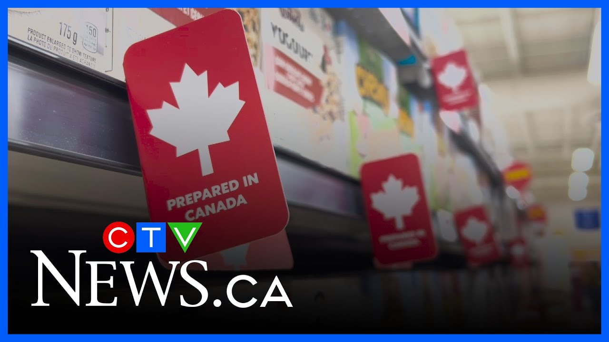

来B站一起耍【Global每日英语简报】
【消费者持续购买加拿大产品：研究】
Summary: A recent survey shows more Canadians prefer buying domestic products, with 68% seeking Canadian goods and 56% avoiding US products, though cost concerns may impact this trend.
摘要： 最新调查显示，更多加拿大人倾向于购买本国产品，68%的人专门寻找加拿大商品，56%的人避免美国产品，但成本问题可能影响这一趋势。

⏱️ Estimated Reading Time: 3 min
Buying Canadian or boycotting American.
购买加拿大产品或抵制美国货。
Sometimes I don't check, but I certainly don't buy American.
有时我不检查，但我肯定不买美国货。
I'll buy anything else other than American, but I try to buy Canadian.
除了美国货，我会买任何其他产品，但我尽量买加拿大货。
Many have the same outlook.
许多人持相同观点。
A recent survey by Narrative Research found that more Canadians are looking to purchase within our country now more than ever.
Narrative Research的最新调查发现，现在比以往任何时候都有更多加拿大人希望在国内购买产品。
In February, we saw that 63% of Canadians told us that they look specifically for Canadian products when they're shopping.
二月份，63%的加拿大人表示他们在购物时专门寻找加拿大产品。
Um, and that's actually increased.
嗯，这一比例实际上有所上升。
Now up to 68% of people are looking specifically for Canadian products while 56% try to avoid goods from the US.
现在高达68%的人专门寻找加拿大产品，而56%的人试图避免美国商品。
Only 19% of those we surveyed um have said that they have done none of those activities.
只有19%的受访者表示他们没有采取任何这些行动。
So it really shows that the vast majority here are again really they remain steadfast to a commit having a commitment to Canada.
因此，这确实表明绝大多数人再次坚定地致力于支持加拿大。
Basically buying Canadian because of the whole trade war that's going on.
基本上是因为正在进行的贸易战而购买加拿大产品。
I mean I figured we got to help the country, right?
我的意思是我们得帮助国家，对吧？
Some just can't afford the switch while others are willing to pay a little extra.
有些人负担不起转变，而另一些人则愿意多付一点钱。
61% of Canadians are willing to buy a Can product over an American product, even if it's 10% more expensive.
61%的加拿大人愿意购买加拿大产品而非美国产品，即使价格高出10%。
But how long will this last?
但这种趋势会持续多久？
Loblaw says it's still working to stock its shelves with more Canadian products.
Loblaw表示仍在努力增加加拿大产品的库存。
But the president and CEO admits the shift may not last, and experts agree.
但总裁兼首席执行官承认这种转变可能不会持久，专家们也同意这一点。
We do expect things to slow down as a result of higher food prices.
我们确实预计由于食品价格上涨，情况会放缓。
We saw that a few years ago.
几年前我们就看到了这种情况。
And of course with food inflation, people go back to their budget.
当然，随着食品通胀，人们会重新考虑预算。
They focus on the money.
他们关注钱。
They focus on prices much more so than the providence of of food products.
他们更关注价格，而不是食品的来源。
Many of the people I spoke to today say they try to buy Canadian whenever possible.
今天我交谈的许多人表示，他们尽可能购买加拿大产品。
And even though cost is a factor, they expect it to be much easier when markets and local produce become available this summer.
尽管成本是一个因素，但他们预计今年夏天市场和本地产品上市时会更容易实现。
Todd Emma Convi in Halifax.
托德·艾玛·康维在哈利法克斯报道。